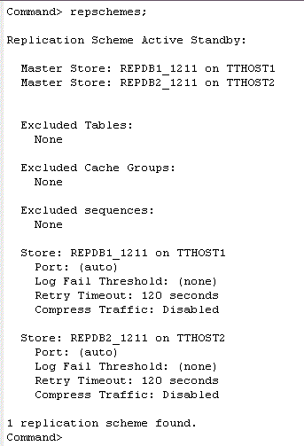

After creating an initial database, you can then define the configuration of the active standby pair, and assign to the current database the active role.
This tutorial uses the DSNs repdb1_1211 and repdb2_1211 to create an Active Standby Pair. The hostnames of the two machines are tthost1 and tthost2. repdb1_1211 is the active database on tthost1, and repdb2_1211 on tthost2 is the standby database.
3. Define the active standby pair
4. Set the replication state to Active
In ttIsql, connect to repdb1_1211 as the replication administrator adm.
ttIsql
connect "dsn=repdb1_1211;uid=adm";
Define an active standby pair schema by using the CREATE ACTIVE STANDBY PAIR SQL statement. The default replication mode for an active standby pair is asynchronous.
create active standby pair repdb1_1211 on "tthost1", repdb2_1211 on "tthost2";
Note: The data store names repdb1_1211 and repdb2_1211 used in the CREATE ACTIVE STANDBY statement are not DSNs. They are the filenames defined in the DataStore attribute. The hostnames used in defining the active standby pair should match the values returned by the OS hostname command on the respective servers.
The ttIsql command repschemes can be used to verify the current replication scheme deployed in the database.
repschemes;

5. Start the replication agent
Use the built-in procedure ttRepStateSet to designate the current database (repdb1_1211) the active state in the active standby pair. ttRepStateGet returns the current replication state of the database.
call ttrepstateset ('active');
call ttrepstateget;

The replication agent is responsible for replicating data between TimesTen databases. It must be running on both databases in an active standby pair. Use the built-in procedure ttRepStart to start the Replication agent.
call ttrepstart;
After setting up an active master database and defining the active standby pair configuration, you can now create the standby database.
| < Previous | 1 | 2 | 3 | Next > |